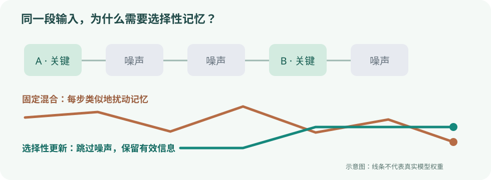
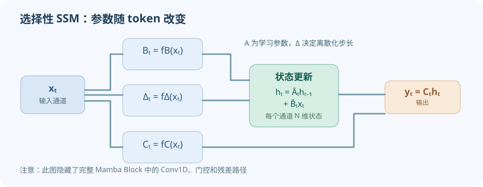
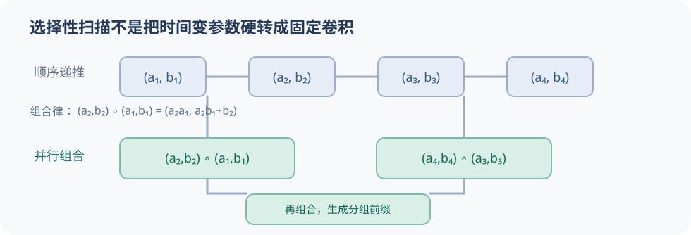

Understanding Mamba
Transformer 会回看历史 token；普通状态空间模型把历史压缩成小状态。Mamba 的突破不是“多记一点”，而是让状态决定 哪些信息值得写入、哪些应该保留，并设计 GPU 友好的并行扫描。
01 · 一段长文本，哪些内容必须记住？
想象读到“密码为 A”，中间穿插一千个无关词，最后问“密码是什么”。模型不能只因为输入变长，就让噪声冲掉关键记忆。
自注意力允许当前位置用 Query 与先前 Key 逐一比较；这种按内容检索的能力很强，但全序列密集注意力的计算与存储随长度增长。经典线性时不变状态空间模型（LTI SSM）把历史放进固定维度的隐藏状态，递推和卷积两种算法可互换，速度具有吸引力。问题是同一套固定动态参数对所有时刻相同，难以依据 token 的内容决定写入或忽略。
Gu 与 Dao 设计的 Selective Copying 任务让有用 token 的间隔随机变化；它专门阻止模型只靠固定位置间隔完成复制。无关 token 与目标 token 应得到不同的记忆更新，而不只是不同的输出权重。[论文 §3.1、Figure 2]

02 · SSM：连续时间系统怎样变成逐 token 运算？
先只考虑一个通道。连续输入为标量 x(t)；隐藏状态 h(t) 为 N 维向量；矩阵 A∈R^{N×N} 描述状态自身的演化，B∈R^{N×1} 把输入写入状态，C∈R^{1×N} 把状态读成输出。
语言模型接收离散 token。采样间隔为 Δ 时，零阶保持（ZOH）把连续矩阵映射为离散矩阵。其状态转移为矩阵指数；写入项也取决于这一时间步的积分：
论文的常见 ZOH 写法用 (ΔA)⁻¹(exp(ΔA)−I)ΔB 表示第二项；上面的积分式不要求显式对可能不可逆的矩阵求逆。若 A、B、C、Δ 与时间无关，展开递推会得到固定卷积核 C B̄、C Ā B̄、C Ā² B̄…，训练时就可以用卷积模式并行。[论文 §2，式 (1)–(4)]
03 · Mamba 如何从固定动态变成内容选择？
Mamba 的关键是把 SSM 中的 B、C、Δ 变为输入 xₜ 的函数。每个 token 经过线性投影产生读写方向和离散化步长；与保持为模型参数的 A 结合后，得到随时间变化的离散系数。时间变化意味着不再存在一条适用于全部输入的固定卷积核。
| 量 | 原论文 Algorithm 2 的形状 | 机制 |
|---|---|---|
| 输入 x | (B, L, D) | 批次、长度、通道 |
| A | (D, N) | 每个通道的结构化状态动态，学习参数 |
| B(x), C(x) | (B, L, N) | 每个位置按内容选择写入与读出方向，广播到各通道 |
| Δ(x) | (B, L, D) | 每位置每通道的正步长 |
| 隐状态 | (B, D, N) | 自回归单步所需状态；训练时有中间状态但采用融合与重计算 |

作者采用 Bₜ=Linear_N(xₜ)、Cₜ=Linear_N(xₜ)、Δₜ=softplus(参数偏置 + Broadcast_D(Linear_1(xₜ))) 这样的参数化。它既是内容选择，也是动态调节记忆随时间流动的速率。[论文 §3.2]
04 · 为什么 Δ 可以理解成门控？
设 N=1，A=−1，B=1。这是一个非常容易分析的泄漏积分器。其连续形式为 h′=−h+x。对输入在一个时间步内保持不变进行 ZOH 离散化：
令 gₜ=1−e^(−Δₜ)，则 hₜ=(1−gₜ)hₜ₋₁+gₜxₜ：当 gₜ 很小，状态近似保持；当它很大，状态更倾向新输入。论文 Theorem 1 证明，在所述 softplus 参数化下它可化为 Sigmoid 型门控。此推导说明了选择性的数学来源，但不要把整个 Mamba 简化为一个标量 GRU：真实模型具有多通道、多维状态、输入投影和非线性模块。[论文 §3.5.1、Appendix C]
05 · 输入依赖破坏卷积，为什么还能快？
对固定 SSM，序列计算可转为卷积；对选择性 SSM，每个位置的系数都变，无法事先生成同一卷积核。然而「不能用固定卷积」并不等于「GPU 只能串行等待」。关键是仿射变换的结合律。
把一步递推写成 fₜ(h)=aₜh+bₜ，用数对 (aₜ,bₜ) 表示。连续两步组合：
这个组合满足结合律（但通常不满足交换律），因此可以用并行前缀扫描求各位置的状态。真实模型的 a 可以是对角结构矩阵/逐元素系数，而不只是图中的标量。Parallel Scan 提升序列方向的并行度；它没有取消所有依赖，也不意味着零成本。

GPU 内存层次才是另一半答案
朴素实现可能把完整形状为 (B,L,D,N) 的中间状态写入 HBM（较慢的显存）。论文采用 kernel fusion + SRAM 中计算 + backward recomputation：把离散化、扫描和读出尽量融合；只向 HBM 写最终的 (B,L,D) 输出；反向传播需要的中间状态重算而非全量保存。论文还分析了 O(BLDN) 量级的运算与 IO 差异；实际速度取决于 GPU、序列长度、实现和对照模型。[论文 §3.3、Appendix D]
06 · Selective SSM 只是 Mamba Block 的中间核心
把 S6 理解了，还不能说看懂了 Mamba。原始 2023 Block 的典型信息路径是：输入投影扩张维度，在主支路使用 短卷积（causal Conv1D）→ 非线性 → Selective SSM，另一支路产生逐元素门控，再做输出投影；网络中反复堆叠这样的 Block，并结合归一化与残差。它不使用标准 Transformer 自注意力或单独 MLP Block；这并不是说“没有任何线性投影”。
论文在比较参数量的实验设置中常取扩张因子 E=2；该配置和具体实现超参数不是对所有模型的普遍要求。官方实现的 mamba_ssm/modules/mamba_simple.py 是定位代码路径的起点，而不是把后续 Mamba-2 代码冒充原版。[论文 §3.4] [官方代码]
07 · 用四个数字看到“忽略噪声”的意义
下面故意使用简化的 hₜ=(1−gₜ)hₜ₋₁+gₜxₜ，初始 h₀=0。四个输入依次为 [1,0,0,0.5]：第一个和第四个代表要保存的内容，中间两个为无关噪声。
| 位置 | 输入 xₜ | 人为选择 gₜ | 计算结果 hₜ |
|---|---|---|---|
| 1 · 关键 A | 1 | 0.80 | 0.80000 |
| 2 · 噪声 | 0 | 0.02 | 0.78400 |
| 3 · 噪声 | 0 | 0.02 | 0.76832 |
| 4 · 关键 B | 0.5 | 0.70 | 0.580496 |
第二、三步使用小门值时，旧状态每次只轻微衰减；第四步明确改写。这说明为何内容依赖门可以处理随机间隔。它不是论文公开的学习参数或准确率。
交互实验：切换固定门与选择性门
点击按钮比较同一序列两种门控。默认显示选择性门；所有数值均由上面的教学公式确定，和训练过的 Mamba 权重无关。
08 · 用可执行的最小 Python 验证组合律
下面两段只实现可验证的标量教学算例，不包含训练、参数投影、CUDA kernel 或完整 Mamba Block。完整源文件与测试位于同目录的 selective_ssm_demo.py 和 test_selective_ssm_demo.py。
def gated_step(h, x, g):
if not 0.0 <= g <= 1.0:
raise ValueError("gate out of range")
return (1 - g) * h + g * x
def compose(left, right):
a1, b1 = left
a2, b2 = right
return (a2 * a1, a2 * b1 + b2)
# 在实数误差容许范围内检查结合律：
# compose(compose(p, q), r) ≈ compose(p, compose(q, r))两个实现的测试分别覆盖门值边界、非法门值、组合律与前缀扫描对逐步递推的等价性。它们仅证明教学递推一致；若要复现论文的训练质量或 GPU 吞吐，需要官方代码、数据、设备条件及独立实验。
09 · 论文实验到底支持哪些结论？
论文在 Selective Copying、语言建模、DNA 和音频等任务上报告结果。Selective Copying 的重点是间隔随机变化时是否还能选择信息；§4.2 的语言实验比较预训练困惑度和零样本评测；§4.5 的速度实验在特定硬件、batch 和实现下比较吞吐。原摘要报告相对所比较 Transformer 配置的约 5 倍生成吞吐，这不是所有场景都可复现的硬性保证。[原论文 §4]
| 证据 | 可以说 | 不可以外推为 |
|---|---|---|
| Selective Copying / §4.1 | 输入依赖的选择机制对随机间隔复制更有利 | 任意长依赖都能无损存储 |
| Language Modeling / §4.2 | 在论文报告的训练协议下 Mamba 与强基线竞争 | 所有数据集和模型规模都领先 Transformer |
| DNA / §4.3 | 论文长序列基因组实验报告可扩展性趋势 | 任何一百万长度任务都无成本 |
| GPU Benchmarks / §4.5 | 特定实现与硬件的速度、IO 收益 | 普遍 5 倍提速、没有额外训练开销 |
项目中的 evidence.json 将主要主张分别绑定到论文小节、公式、算法和官方代码。教学图示和数字算例与真实实验结果分开记录。
10 · 与 Transformer、线性注意力、Mamba-2 的关系
Transformer：使用显式 token-to-token 注意力交互；Mamba-2023 在序列维度采用压缩状态与选择性递推。前者便于依据位置内容做动态检索，后者避免解码时为每个历史 token 保留标准注意力 KV Cache，但会受有限状态容量影响。
线性注意力 / DeltaNet：也强调有限大小记忆与递推计算，但具体状态、写入/纠错规则不一样。可结合 Understanding DeltaNet 理解“状态更新的记忆干扰”，结合 Understanding KV Cache 理解标准 Transformer 的推理缓存。
Mamba-2：Dao 与 Gu 在 ICML 2024 的 Transformers are SSMs 中引入 Structured State Space Duality，提出新算法和 Mamba-2。它是后续架构，不应回填为 2023 原始 Mamba 的机制。[ICML 2024]
11 · 原始论文、代码与进一步学习
- Albert Gu, Tri Dao. Mamba: Linear-Time Sequence Modeling with Selective State Spaces. arXiv:2312.00752, 2023. 研究动机、Algorithm 2、Selective Scan 和实验。
- arXiv HTML 正文，用于逐式核对与查阅 Appendix C、D。
- state-spaces/mamba，官方实现与使用说明。
- Tri Dao, Albert Gu. Transformers are SSMs: Generalized Models and Efficient Algorithms Through Structured State Space Duality. ICML 2024。后续 Mamba-2 / SSD。